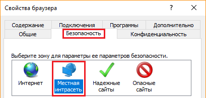
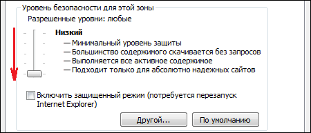

документов в "Excel" выполните следующие дествия

| В правой верхней части окна браузера нажмите "Сервис" |
| Далее перейдите по строке меню "Свойства браузера" |
|
| В открывшемся окне перейдите на вкладку "Безопасность" и выберите "Местная интрасеть" |
|  |
| В разделе "Уровень безопасности для этой зоны" опустите вертикальный ползунок на нижний уровень |
|  |
| Нажмите "Применить" и "OK". Обновите страницу браузера. |